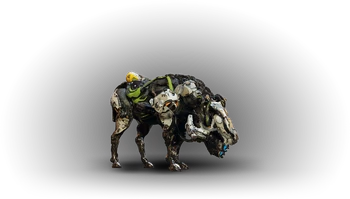
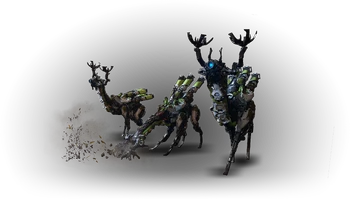
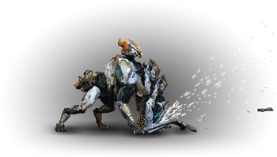
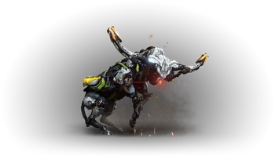
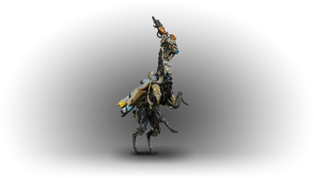
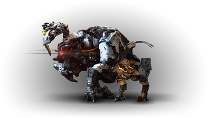
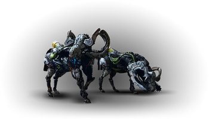
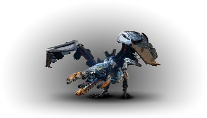
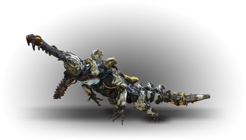
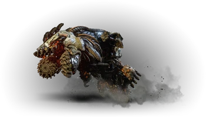

Machine D'acquisition
Le Galopeur

Ces machines grégaires fuient lorsqu’elles sont dérangées, il convient donc de les attaquer rapidement et discrètement
Composants :
- Corps : Aucune faiblesse et aucune résistance
- Bonbonne à flambée : Faible face au feu et à la déchirure, aucune résistance
Butin :
- Éclat de métal
- Flambée
- Bluette
- Fil électrique
- Noyau de machine – petit
- Lentille de Galopeur
- Cœur de Galopeur
Piratage : PSI. Servez vous de cette machine comme monture.
Conseils : Une flèche de feu vers la bonbonne au niveau de son train arrière et vous provoquerez une explosion qui
pourra répandre le feu aux créatures proches du Galopeur. Si vous souhaitez extraire le composant (flambée), tirez
une flèche normale ou perforante sur la bonbonne à flambée. Une élimination silencieuse sera également efficace.
Le Brouteur

S'il fuit généralement lorsqu'il est effrayé, il peut également attaquer avec ses longues cornes.
Composants :
- Corps : Aucune faiblesse et aucune résistance
- Bonbonne à flambée : Faible face au feu et à la déchirure, aucune résistance
- Pales de rotor : Faible face à la déchirure, aucune résistance
Butin :
- Éclat de métal
- Flambée
- Bluette
- Fil électrique
- Noyau de machine – petit
- Lentille de Brouteur
- Cœur de Brouteur
Piratage : SIGMA
Conseils : Comme pour le Galopeur, sa bonbonne est sa principale faiblesse. Une flèche de feu fera exploser cette dernière et pourra se
répandre aux créatures avoisinantes. Utilisez une flèche non-élémentaire pour extraire ce composant (flambée). Une élimination silencieuse
sera également efficace. Vu la propension de cette machine à éviter les combats, il peut être utile de poser des pièges pour empêcher un
troupeau de fuir.
La Charognarde

Cette amatrice de cadavres peut utiliser sa mâchoire tranchante et son laser pour se défendre si nécessaire
Composants :
- Corps : Aucune faiblesse et aucune résistance
- Batterie : Faible face à l’électricité à la déchirure, aucune résistance
- Radar : Faible face à la déchirure, aucune résistance
Butin :
- Éclat de métal
- Bluette
- Réceptacle métallique
- Fil électrique
- Noyau de machine – petit
- Lentille de Charognarde
- Cœur de Charognarde
Piratage : SIGMA
Conseils : Même si détacher les deux composants de la Charognarde la tuera à coup sûr, une élimination silencieuse sera conseillée au début
de votre progression tant cette machine est rapide.
Le Grand-Front

Ces machines massives fuient lorsqu’elles sont dérangées, il convient donc de les attaquer rapidement ou discrètement
Composants :
- Corps : Aucune faiblesse et aucune résistance
- Bonbonne à flambée : Faible face au feu et à la déchirure, aucune résistance
- Cornes : Faible face à la déchirure, aucune résistance
Butin :
- Éclat de métal
- Flambée
- Réceptacle métallique
- Bluette
- Fil électrique
- Noyau de machine – petit
- Lentille de Grand-Front
- Cœur de Grand-Front
Piratage : PSI. Servez vous de cette machine comme monture.
Conseils : Comme pour le brouteur une attaque de feu sur les bonbonnes (au nombre de deux) sera particulièrement efficace contre le Grand-Front.
L’explosion produite par l’attaque de feu pourra répandre le feu aux créatures avoisinantes. Vous pourrez en extraire de la flambée si vous détachez
se composant. La pose de piège pour être pratique pour éviter à tout un troupeau de fuir votre attaque.
La Corne-Filante

Agile et téméraire lorsqu’il est provoqué, ses longues cornes foreuses peuvent infliger de sérieux dégâts
Composants :
- Corps : Aucune faiblesse et aucune résistance
- Cornes de forage : Faible face à la déchirure, aucune résistance
- Bonbonne de gel : Faible face au gel et à la déchirure, aucune résistance
Butin :
- Éclat de métal
- Givrelymphe
- Réceptacle métallique
- Bluette
- Fil électrique
- Noyau de machine – petit
- Lentille de Corne-Filante
- Cœur de Corne-Filante
Piratage : SIGMA
Conseils : Tirer une flèche de gel sur la bonbonne provoquera une explosion qui pourra geler toutes les créatures environnantes.
Tirez une flèche non-élémentaire pour détacher la bonbonne et récupérer du givrelymphe. Attention à la vélocité de cette machine !
Le Pietineur

Lorsqu’il est menacé, il court autour de sa cible en enchaînant des attaques de feu explosives
Composants :
- Corps : Faible face au gel, résistance au feu
- Cornes d’excavation : Faible face à la déchirure, aucune résistance
- Batterie : Faible face à l’électricité et à la déchirure, aucune résistance
- Unité de traitement : Faible face à tout type d’attaque, aucune résistance
Butin :
- Éclat de métal
- Réceptacle métallique
- Bluette
- Fil électrique
- Noyau de machine – moyen
- Tresse lumineuse
- Lentille de Piétineur
- Cœur de Piétineur
Piratage : RHO
Conseils : Cette machine est plutôt impressionnante. Ses attaques seront difficiles à esquiver de par sa taille imposante et sa vitesse élevée.
Ses charges régulières rendent les câbles électriques très utiles. Vous pouvez également détruire ses cornes pour le rendre beaucoup moins
dangereux et viser l’unité de traitement pour désactiver les attaques de feu et provoquer une explosion autour du Piétineur. La destruction
de la batterie provoquera également une explosion électrique.
La Coureuse

Quand une menace est détectée, ces machines grégaires pourchassent ensemble leur cible. Peut être montée.
Composants :
- Corps : Aucune faiblesse et aucune résistance
- Bonbonne à flambée : Faible face au feu et à la déchirure, aucune résistance
- Cornes : Faible face à la déchirure, aucune résistance
Butin :
- Éclat de métal
- Flambée
- Réceptacle métallique
- Bluette
- Fil électrique
- Noyau de machine – petit
- Lentille de Coureuse
- Cœur de Coureuse
Piratage : PSI. Servez vous de cette machine comme monture.
Conseils : Une flèche de feu vers la bonbonne au niveau de son train arrière et vous provoquerez une explosion qui
pourra répandre le feu aux créatures proches du Galopeur. Si vous souhaitez extraire le composant (flambée), tirez
une flèche normale ou perforante sur la bonbonne à flambée. Une élimination silencieuse sera également efficace.
L’Etincelle

Ces machines se déplaçant en groupe attaquent en piqué à l’aide de leurs serres acérées ou de leurs attaques de gel à distance
Composants :
- Corps : Faible face au feu, résistance au gel
- Bec : Faible face à la déchirure, aucune résistance
- Poche de gel : Faible face à tout type d’attaque, aucune résistance
Butin :
- Éclat de métal
- Givrelymphe
- Bluette
- Fil électrique
- Noyau de machine – petit
- Lentille d’Etincelle
- Cœur d’Etincelle
Piratage : XI
Conseils : Cette machine se déplaçant toujours en groupe, elle risque de vous poser beaucoup de problèmes si 3 ou 4 de ses semblables vous
attaquent à l’aide de leurs bombes de givre. Vous pouvez soit percer la poche au niveau de son ventre pour la faire exploser, soit utiliser
votre lance-cordes pour le ramener sur terre et lui faire tâter de votre lance. N’hésitez pas à utiliser une potion de résistance au givre !
Le Carapateur

Capable d’attaquer à la fois sur terre et dans l’eau, sa corpulence cache une rapidité d’attaque redoutable lorsqu’il plonge vers sa proie
Composants :
- Corps : Faible face au feu, résistance au gel
- Bonbonne à flambée : Faible face au feu et à la déchirure, aucune résistance
- Poche de gel : Faible face à tout type d’attaque, aucune résistance
Butin :
- Éclat de métal
- Flambée
- Givrelymphe
- Bluette
- Fil électrique
- Noyau de machine – moyen
- Tresse lumineuse
- Lentille de Carapateur
- Cœur de Carapateur
Piratage : RHO
Conseils : Présent autour de points d’eau, le Carapateur est redoutable dans l’eau. S’il vous croise alors que vous nagez,
vous risquez de ne pas faire long feu. L’idéal est de l’affronter à distance, à partir d’une hauteur, afin qu’il ait du mal
à vous cibler. Dans ce cas de figure, vous aurez un point de vue idéal sur sa bonbonne à flambée et sa colonne vertébrale.
Faire exploser sa poche de gel sera la meilleure solution si vous optez pour une approche plus frontale.
Le Brise-Roc

Sensible au bruit, cette gigantesque machine s’enfuit sous terre et en jaillit avec une puissance dévastatrice
Composants :
- Corps : Faible face au givre, résistance au feu
- Bras fouisseur : Faible face à la déchirure, aucune résistance
- Port d’échappement : Faible face à tout type d’attaque, aucune résistance
- Poche de carburant : Faible face à tout type d’attaque, aucune résistance
Butin :
- Éclat de métal
- Flambée
- Coque d’écho
- Fil électrique
- Noyau de machine – gros
- Lentille de Brise-Roc
- Cœur de Brise-Roc
Piratage : ZETA
Conseils : Le Brise-Roc alternera les phases terrestres et souterraines et vous mènera la vie dure ! Il n’hésitera pas à surgir sous vos pieds et
ainsi vous occasionner beaucoup de dégâts. Les attaques électriques seront votre meilleure alliée pour l’immobiliser et l’attaquer un peu plus librement.
Si vous détruisez ses bras fouisseurs il ne pourra plus repasser sous terre. L’explosion de sa poche a carburant au niveau de son ventre provoquera énormément
de dégâts au Brise-Roc. L’esquive et la vitesse sont les maîtres mots de ce combat, bonne chance !